Note
Go to the end to download the full example code.
Axis autoscaling#
Basic concept#
Autoscaling ensures that data is visible within the Axes by automatically adjusting the axis limits. When you plot data, Matplotlib's autoscaling mechanism updates the axis limits accordingly.
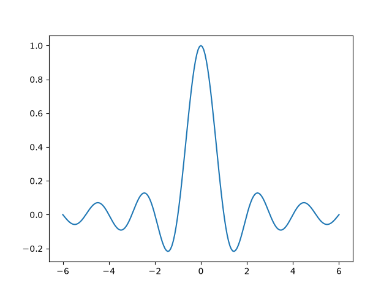
Margins#
To ensure that the data is not at the very edge of the plot, Matplotlib adds a margin around the data limits. Note that the x data range in the above plot is [-6, 6], but the x-axis limits are slightly wider due to the margin.
The default margin is 5%, defined via
rcParams["axes.xmargin"](default:0.05)rcParams["axes.ymargin"](default:0.05)rcParams["axes.zmargin"](default:0.05)
print(ax.get_xmargin(), ax.get_ymargin())
0.05 0.05
The margin size can be overridden to make them smaller or larger using
margins:
fig, ax = plt.subplots()
ax.plot(x, y)
ax.margins(0.2, 0.2)
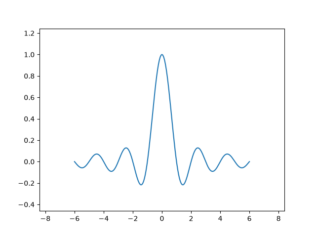
In general, margins can be in the range (-0.5, ∞), where negative margins set
the axes limits to a subrange of the data range, i.e. they clip data.
Using a single number for margins affects both axes, a single margin can be
customized using keyword arguments x or y, but positional and keyword
interface cannot be combined.
fig, ax = plt.subplots()
ax.plot(x, y)
ax.margins(y=-0.2)
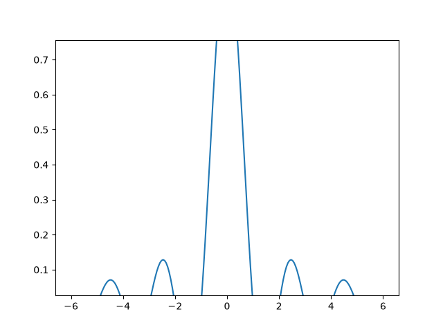
Sticky edges#
There are plot elements (Artists) that are usually used without margins.
For example, false-color images (e.g. created with Axes.imshow) are not
considered in the margins calculation.
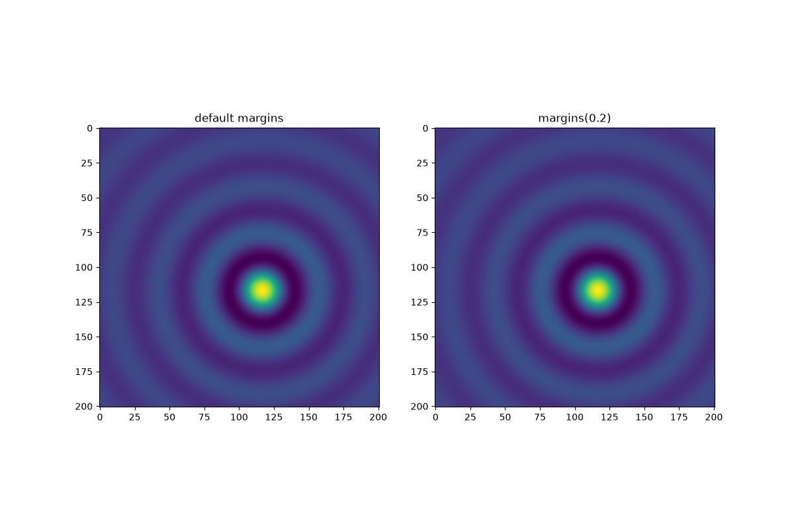
This override of margins is determined by "sticky edges", a
property of Artist class that can suppress adding margins to axis
limits. The effect of sticky edges can be disabled on an Axes by changing
use_sticky_edges.
Artists have a property Artist.sticky_edges, and the values of
sticky edges can be changed by writing to Artist.sticky_edges.x or
Artist.sticky_edges.y.
The following example shows how overriding works and when it is needed.
fig, ax = plt.subplots(ncols=3, figsize=(16, 10))
ax[0].imshow(zz)
ax[0].margins(0.2)
ax[0].set_title("default use_sticky_edges\nmargins(0.2)")
ax[1].imshow(zz)
ax[1].margins(0.2)
ax[1].use_sticky_edges = False
ax[1].set_title("use_sticky_edges=False\nmargins(0.2)")
ax[2].imshow(zz)
ax[2].margins(-0.2)
ax[2].set_title("default use_sticky_edges\nmargins(-0.2)")
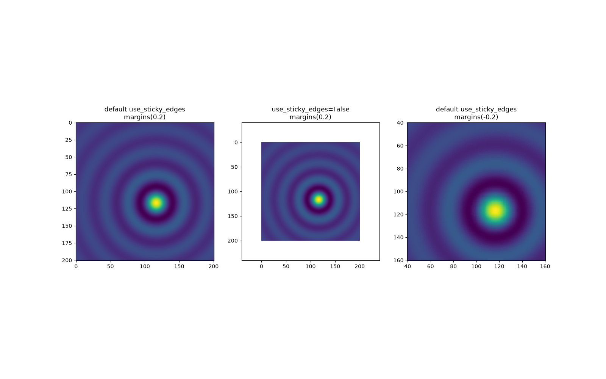
We can see that setting use_sticky_edges to False renders the image
with requested margins.
While sticky edges don't increase the axis limits through extra margins, negative margins are still taken into account. This can be seen in the reduced limits of the third image.
Controlling autoscale#
By default, the limits are recalculated every time you add a new curve to the plot:
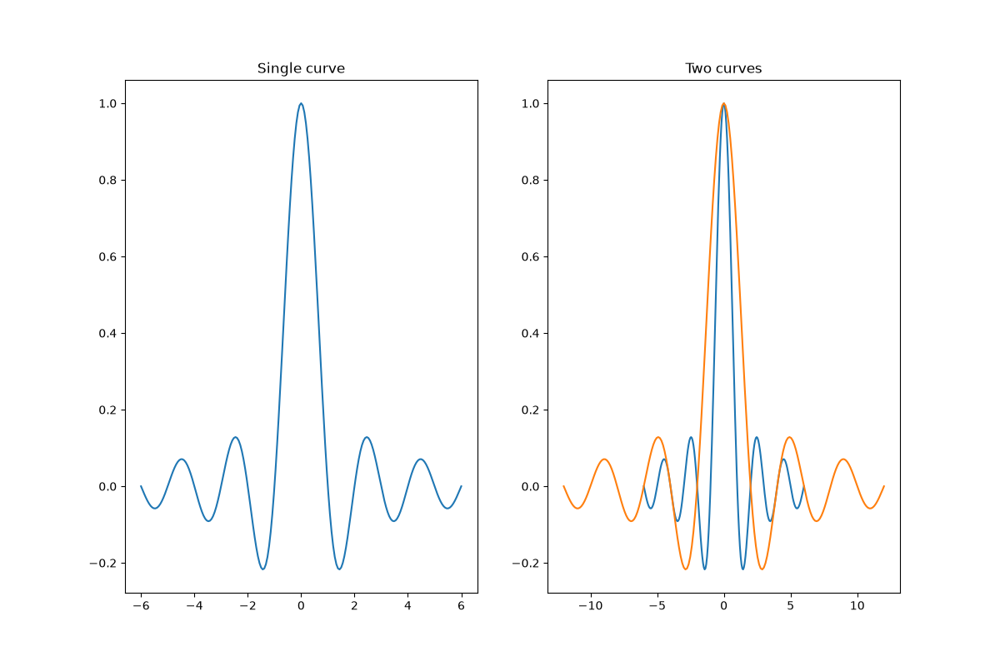
If you don't want automatic updates of the axis limits, either deactivate
autoscaling with autoscale or set the limits
manually with set_xlim / set_ylim.
Let's say that we want to see only a part of the data in
greater detail. Setting the xlim persists even if we add more curves to
the data. Calling Axes.autoscale will re-enable the autoscaling and
recalculate the limits to fit all the data.
fig, ax = plt.subplots(ncols=2, figsize=(12, 8))
ax[0].plot(x, y)
ax[0].set_xlim(left=-1, right=1)
ax[0].plot(x + np.pi * 0.5, y)
ax[0].set_title("set_xlim(left=-1, right=1)\n")
ax[1].plot(x, y)
ax[1].set_xlim(left=-1, right=1)
ax[1].plot(x + np.pi * 0.5, y)
ax[1].autoscale()
ax[1].set_title("set_xlim(left=-1, right=1)\nautoscale()")
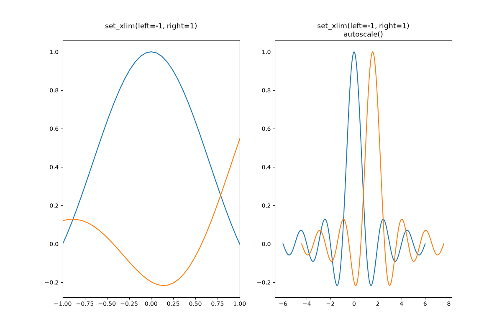
We can check that the first plot has autoscale disabled and that the second
plot has it enabled again by using Axes.get_autoscale_on():
False
True
Arguments of the autoscale function give us precise control over the process
of autoscaling. A combination of arguments enable, and axis sets the
autoscaling feature for the selected axis (or both). The argument tight
sets the margin of the selected axis to zero. To preserve settings of either
enable or tight you can set the opposite one to None, that way
it should not be modified. However, setting enable to None and tight
to True affects both axes regardless of the axis argument.
fig, ax = plt.subplots()
ax.plot(x, y)
ax.margins(0.2, 0.2)
ax.autoscale(enable=None, axis="x", tight=True)
print(ax.margins())
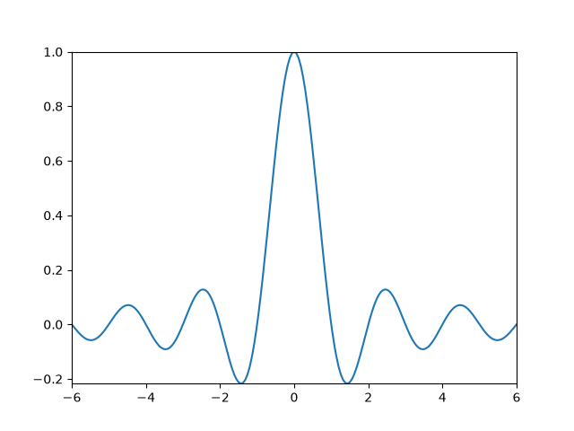
(0, 0)
Technical background#
This section explains the internal pipeline that runs when autoscaling computes axis limits from data. Understanding the mechanics helps when you encounter surprising behaviour or need to update limits manually.
Data limits and view limits#
Matplotlib maintains two sets of limits:
Data limits (
Axes.dataLim): the tight bounding box of the raw data.View limits (
Axes.viewLim): the displayed axis limits. By default, computed from the data limits through the autoscaling mechanism outlined below, but they can be set independently. View limits can alternatively be set explicitly throughset_xlim/set_ylim, which also disables autoscaling so that the set limits remain fixed.
The following shows the input and output of this process — dataLim holds
the raw data bounds, viewLim the final displayed axis limits.
fig, ax = plt.subplots()
x = np.linspace(-6, 6, 201)
y = np.sin(x)
ax.plot(x, y)
print(f"dataLim x: ({ax.dataLim.x0:.3f}, {ax.dataLim.x1:.3f})")
print(f"dataLim y: ({ax.dataLim.y0:.3f}, {ax.dataLim.y1:.3f})")
print(f"viewLim x: ({ax.viewLim.x0:.3f}, {ax.viewLim.x1:.3f})")
print(f"viewLim y: ({ax.viewLim.y0:.3f}, {ax.viewLim.y1:.3f})")
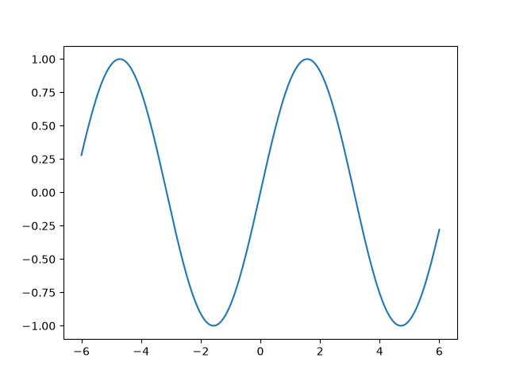
dataLim x: (-6.000, 6.000)
dataLim y: (-1.000, 1.000)
viewLim x: (-6.600, 6.600)
viewLim y: (-1.100, 1.100)
The x data range is [-6, 6] and the default 5% margin adds roughly 0.6 on each side, widening the view to about [-6.6, 6.6]. The same applies to the y axis.
Update logic#
Data and view limit updates are handled as separate stages.
Data limits: When an artist is added to an Axes through one of the
plotting methods, the data limits are updated through Axes.update_datalim
to include the new data. This only ever increases the data limits. It is
also possible to update Axes.dataLim manually, but this is not common.
Removal of an artist or change of its data does not trigger any update of
the data limits, so they can become out of date. In such cases, it is
necessary to explicitly recompute the data limit through Axes.relim.
View limits: When autoscaling is enabled, the view limits are
automatically computed from the data limit. This update is lazy and only
triggered when the view limits are queried or drawn, so that they don't have
to be recomputed for every added artist. This is transparent to the user.
Explicit changes of the data limits through Axes.dataLim or Axes.relim
do not trigger an update of the view limits, so they can also become out of
date. In such cases, it is necessary to explicitly recompute the view limits
through Axes.autoscale_view.
View limit calculation#
Given the data limits, the view limits are derived through these steps:
scale domain clamping
margin expansion
sticky edge clamping
optional limit rounding
Scale domain clamping#
Before margins are applied, the data limits are clipped to the valid domain of the axis scale. This matters for scales like log (positive values only) and logit (values strictly between 0 and 1): if a bound lies outside the domain, it is replaced with a value at the domain boundary.
For this purpose, Axes.dataLim tracks not just the ordinary min/max of
the data but also minpos — the smallest strictly positive value seen.
A log-scale lower bound of zero or less is replaced with minpos rather
than the actual minimum, because only positive values can be displayed.
For a logit scale, the upper bound is approximated as 1 - minpos, since
the largest data value below 1 is not tracked separately. This means the
autoscaled upper limit may include slightly more headroom than necessary
when the data maximum is well below 1.
Margin expansion#
The first step is to apply the margins, i.e. widen the view limits beyond the data limits so that data is not at the very edge of the plot. Margins are specified as a fraction of the data span in screen coordinates so that the data-free border area always has the same visual size, irrespective of data ranges or axis scales. The margin is applied symmetrically to both sides of the data limits, so the view is expanded equally in both directions.
This is illustrated in the following example, where the data limits and axis scales are different, but the visual margin is the same in both cases.
fig, (ax1, ax2) = plt.subplots(1, 2, figsize=(9, 4))
fig.suptitle("Margins are visually constant, "
"even with different data limits and axis scales")
ax1.plot([0, 10], [0, 1])
ax1.margins(0.2)
x = np.linspace(1, 20)
ax2.semilogy(x, np.exp(x))
ax2.margins(0.2)
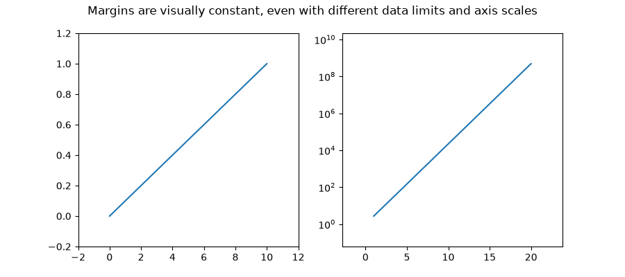
Sticky edges clamping#
Sticky edges are axis values at which margin expansion is clamped. After computing the margin-expanded limits, if an expanded limit would extend beyond a sticky edge, it is pulled back to that edge instead.
Artists register sticky edges to prevent blank margins at natural data
boundaries. imshow, for example, registers sticky edges at its
four pixel boundaries, which is why images fill the Axes by default without
any surrounding margin (as shown in the Sticky edges
section above). Sticky edges only suppress outward expansion past the data
boundary — they never shrink limits into the data, and negative margins
are not affected. Setting Axes.use_sticky_edges = False disables sticky
edge clamping on that Axes.
Limit rounding#
As a final step, the view limits can optionally be expanded outward to the
nearest "nice" tick position, so that the axis edges coincide with tick
marks. This is disabled by default, but can be turned on with the
"round_numbers" mode of rcParams["axes.autolimit_mode"] (default: 'data'):
'data'(default): keep the limits at the margin-expanded values.'round_numbers': expand the limits outward to the nearest "nice" tick position, so the axis edges coincide with tick marks.
fig, (ax1, ax2) = plt.subplots(1, 2, figsize=(10, 4))
ax1.plot([0.3, 4.7], [0.3, 4.7])
ax1.set_title("autolimit_mode='data' (default)")
with plt.rc_context({'axes.autolimit_mode': 'round_numbers'}):
ax2.plot([0.3, 4.7], [0.3, 4.7])
ax2.set_title("autolimit_mode='round_numbers'")
ax2.autoscale_view() # force autoscale while round_numbers is active
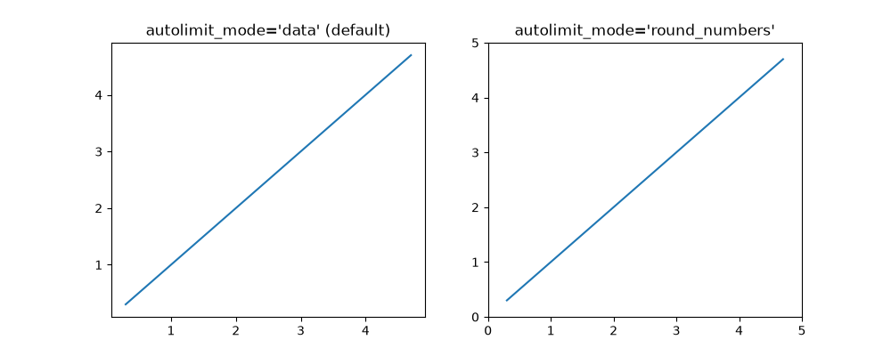
Total running time of the script: (0 minutes 7.194 seconds)